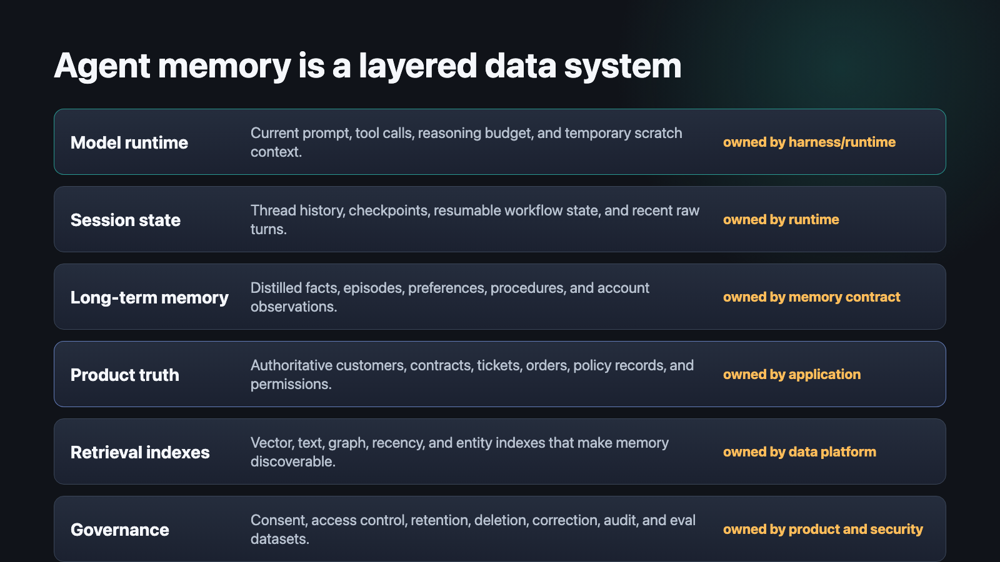
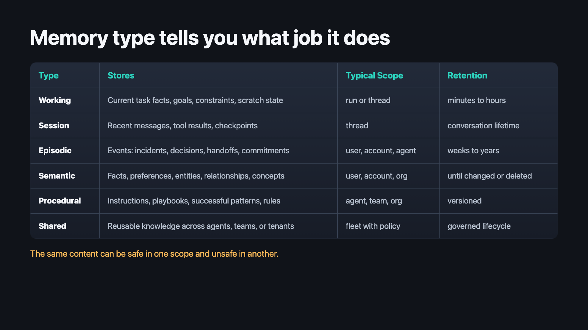
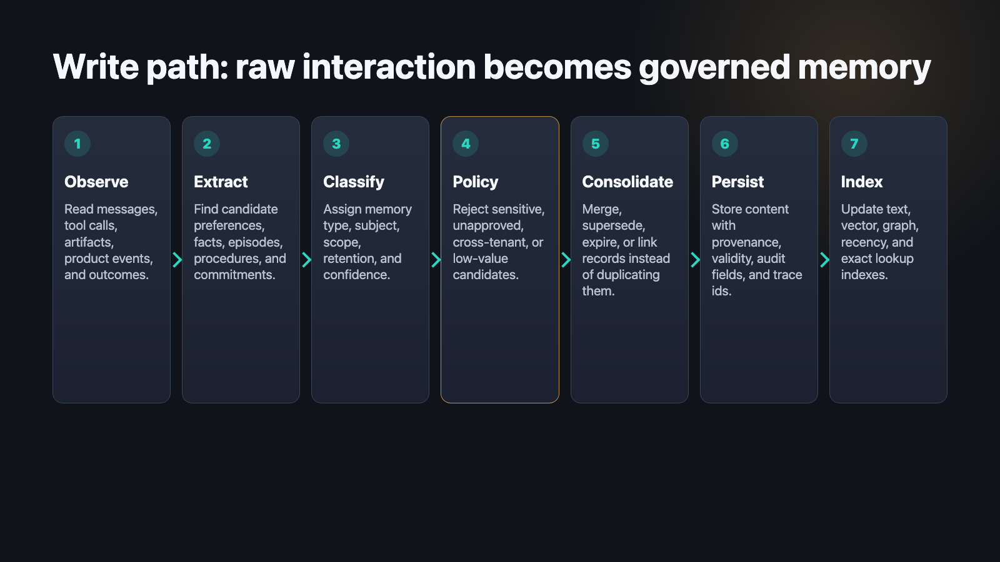
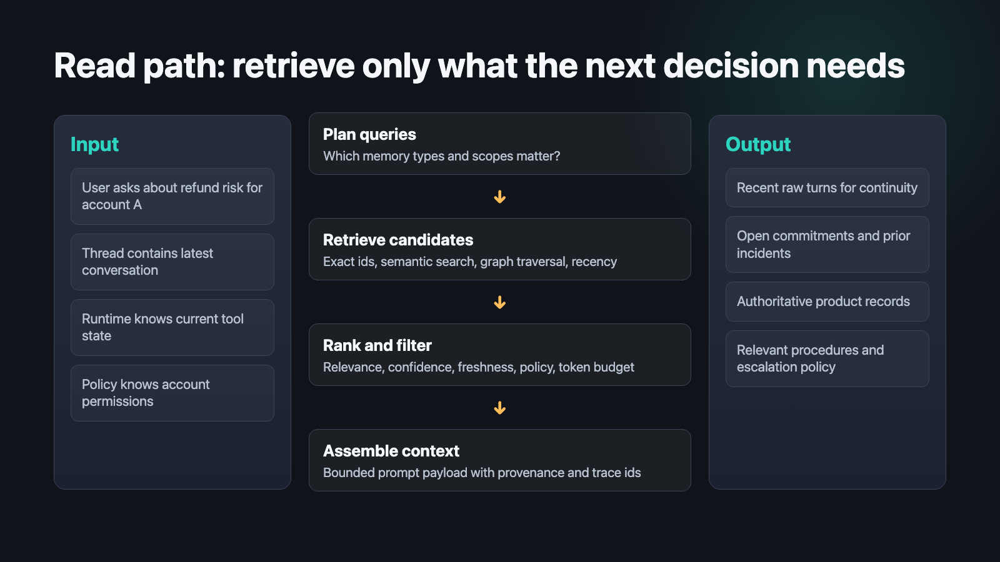
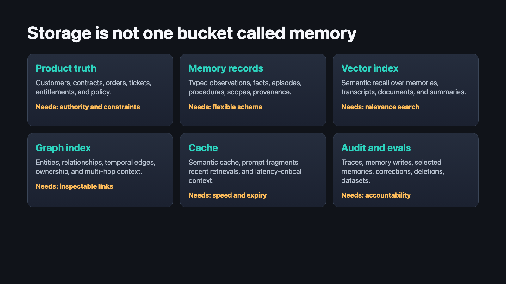
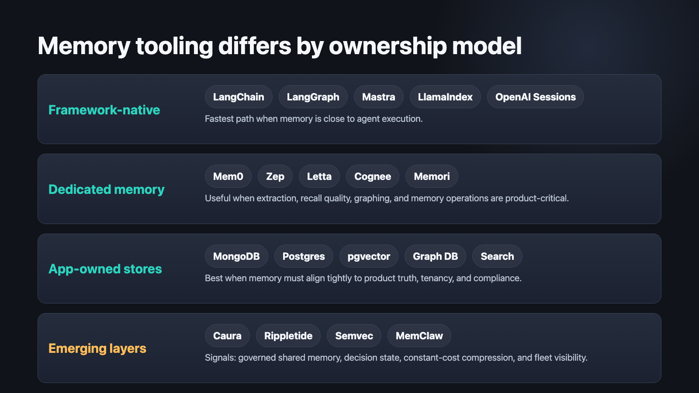
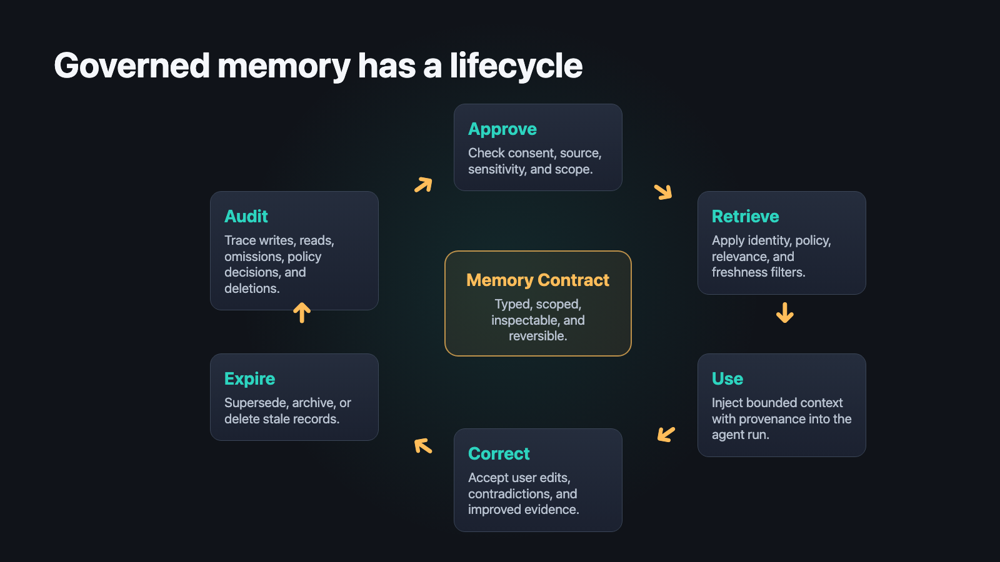
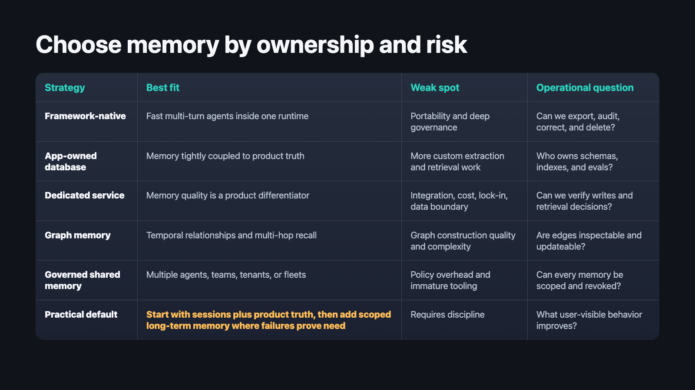

Agent Development
A technical and practical rebuild of agent memory from first principles: memory types, write paths, read paths, databases, framework primitives, managed services, emerging layers, and production governance.
85 minutes / 46 slides / Last updated 2026-05-27
Learning goals
Separate working, session, episodic, semantic, procedural, graph, and shared memory.
Trace memory through extraction, consolidation, retrieval, prompt assembly, correction, and deletion.
Compare LangChain, LangGraph, LangMem, Mastra, LlamaIndex, OpenAI Agents SDK, Mem0, Zep, Letta, Cognee, Memori, and emerging layers.
Evaluate memory for precision, freshness, privacy, observability, governance, cost, and product fit.
Running example
The agent must remember enough to be useful, forget enough to be safe, and verify enough against product truth to avoid acting on stale or invented context.
First principle
The practical question is not whether the agent can remember. It is what the agent is allowed to remember, who can see it, and how it is corrected.
Architecture

The database layer is not just vector search. It is where product truth, memory records, indexes, and auditability become enforceable.
Scope
Taxonomy

Working memory
Current customer, open ticket, active escalation, proposed refund, risk threshold, and partially completed tool results.
Working memory should be compact, task-local, and easy to discard. It is not the place for long-term customer truth.
Session memory
Message history, checkpointed graph state, recent tool calls, and generated artifacts stored under a stable thread id.
It helps the agent resume a conversation. It does not automatically become trusted long-term memory.
OpenAI Agents SDK sessions and LangGraph checkpointed state are good examples of session continuity mechanisms.
Long-term memory
Cross-thread memory must be scoped, versioned, and correctable because the agent will use it when the original conversation is gone.
Data model
{
"id": "mem_9W4",
"type": "episodic",
"subject": { "kind": "account", "id": "acct_42" },
"scope": ["tenant:acme", "account:acct_42"],
"content": "Support committed to send migration report by Friday.",
"source": { "threadId": "thr_81", "traceId": "run_7J" },
"confidence": 0.82,
"validFrom": "2026-05-21",
"validTo": null,
"policy": { "pii": false, "retentionDays": 180 }
}The fields around the content are what make memory governable.
Write path

Write timing
| Write mode | Use when | Risk |
|---|---|---|
| Hot path | The next response needs the memory immediately. | Adds latency and can over-trust unverified information. |
| Background consolidation | The memory improves future sessions but not the current turn. | May lag behind recent messages or miss a narrow correction. |
| Human-approved | The memory affects policy, money, compliance, or sensitive preferences. | Requires workflow and UX support. |
Admission control
A memory system that remembers everything becomes a slower, more confident transcript search engine.
Consolidation
Indexing
| Surface | Question it answers | Example |
|---|---|---|
| Exact lookup | What do we know about this account? | Fetch by accountId. |
| Semantic index | What prior issue is similar? | Vector search across incidents. |
| Graph | Who is connected to this decision? | Traverse account, owner, ticket, policy. |
| Recency | What changed recently? | Rank by freshness and validity. |
| Audit | Why did the agent use this? | Trace memory id to source run. |
Read path

Ranking
Prompt budget
Injects broad summaries, stale facts, every similar episode, and unrelated user preferences because they look semantically close.
Injects the minimum set of scoped, fresh, source-linked memory records needed for the next decision.
Long context does not remove the need for memory selection. It just moves the failure from missing context to distractor context.
Freshness
Treat remembered context as guidance. For irreversible actions, verify against source systems or ask for confirmation.
Databases

MongoDB framing
Memory types, memory units, application modes, and persistent memory management around the LLM.
Flexible documents, metadata, vector search, operational data, and audit records can live near each other without forcing memory into one shape.
The useful lesson is broader than one product: memory needs a record model and retrieval model that can evolve together.
Postgres and pgvector
Graph memory
Temporal claims, account relationships, support incidents, people, ownership, commitments, dependencies, and multi-hop questions.
Graph construction can produce noisy edges. The system needs provenance, edge types, confidence, and update rules.
LangChain ecosystem
Deep Agents and LangMem
Persistent memory can be represented as scoped files, with agents reading and updating memory through file operations and consolidation.
Memory tools can be added to LangGraph applications; production setups need persistent stores rather than in-process memory.
Mastra
Its practical control points are resource, thread,
memory processors, storage providers, and tracing.
LlamaIndex
memory = Memory.from_defaults(
session_id="account-acme",
token_limit=40000,
)
agent = FunctionAgent(llm=llm, tools=tools)
response = await agent.run(
"Summarize the current renewal risk.",
memory=memory,
)The important abstraction is explicit memory injection and retrieval around agent execution.
OpenAI Agents SDK
agent = Agent(
name="Account assistant",
instructions="Use session context, then verify facts with tools.",
)
session = SQLiteSession("account_acme_thread_42")
result = await Runner.run(
agent,
"What did we promise after the outage?",
session=session,
)Session memory stores conversation history. Durable customer memory still needs a deliberate data contract.
Dedicated services
Mem0
User, agent, and session memory behavior; add, search, update, and delete operations; graph memory, async clients, rerankers, metadata filters, and MCP integration.
Test memory admission quality, retrieval precision, deletion semantics, tenant isolation, latency, and cost on real account-agent tasks.
Comparison

Zep
Add memory, retrieve memory, and pass the returned context into the next LLM call.
Zep recommends including the last few raw messages as short-term memory because ingestion and graph-derived context may lag recent turns.
Letta
Cognee and Memori
Exposes remember, session memory, graph memory, and an agent-memory decorator that retrieves memory at an async function boundary.
Frames memory as enterprise memory fabric with multi-agent processing, dual memory modes, and provider configuration.
Emerging layers
| Layer | Signal | Confidence |
|---|---|---|
| Rippletide | Decision runtime concepts: reinforcement infrastructure between agents and real-world action. | Medium |
| Semvec | Fixed-size semantic state vector plus tiered content-aware memory for constant-cost context. | Low |
| Caura | Governed shared memory for fleets where visibility, policy, and security boundaries matter. | Low |
The concepts are useful even when the implementation maturity is still emerging.
Privacy
Governance

Evals
| Eval target | Questions | Dataset examples |
|---|---|---|
| Write quality | Did it remember the right thing, with the right type and scope? | Conversations with known preferences, incidents, corrections, and non-memory noise. |
| Read usefulness | Did it retrieve the minimum useful context for the task? | Account-risk tasks requiring prior commitments and policy verification. |
| Safety | Did it avoid forbidden, stale, or cross-tenant memory? | Tenant boundary tests, deletion tests, prompt-injected memory poisoning. |
Observability
Failure modes
Recipe
Decision framework

Code-level shape
type MemoryQuery = {
subject: { kind: "user" | "account" | "agent"; id: string };
scope: string[];
task: string;
allowedTypes: MemoryType[];
traceId: string;
};
interface AgentMemory {
remember(candidate: MemoryCandidate): Promise<MemoryWriteResult>;
recall(query: MemoryQuery): Promise<RankedMemory[]>;
correct(id: string, patch: MemoryCorrection): Promise<void>;
delete(scope: string[], reason: string): Promise<void>;
}The interface forces scope, provenance, policy, and traceability to remain visible.
Recap
Memory is a product data system around the model. It interacts with runtime state, product truth, retrieval indexes, and governance.
Start with sessions and product truth, add long-term memory deliberately, and adopt specialized layers only when they solve measured failures.
References